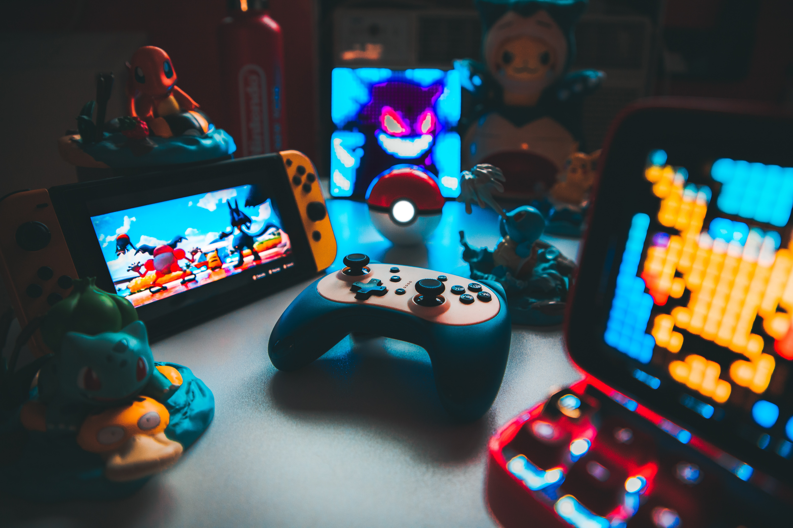
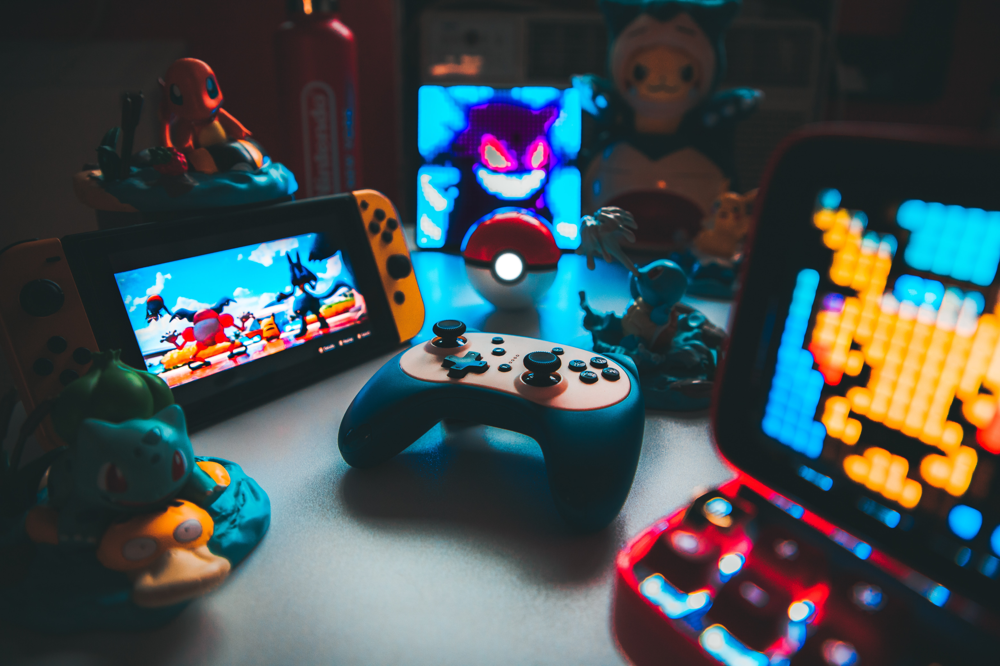

Personal Site Plan
In their free time, lots of people like to play video games. But what I like to do in my free time is make video games. Of course, I'm still learning quite a lot, so I have nothing finished to share, but with a growing community of indie game developers, it's good to be able to look at the progress and methods of other game developers for inspiration or support. That's why I'm building this website; to share the progress I make in my journey towards being a full-time indie game developer.
This website will be useful as a portfolio to potential employers, but also to fans of the game development industry and anyone who might like to make their own games
Color Palette
Palette URL:
https://coolors.co/221d23-70798c-f5f1ed-dad2bc-a99985| Primary | Secondary | Accent 1 | Accent 2 | Accent 3 |
|---|---|---|---|---|
| [#221D23] | [#70798C] | [#F5F1ED] | [#DAD2BC] | [#A99985] |
Fonts
Serif
Roboto Serif
Helvetica
About This Website
This generation is full of the delightful interactive simulations we call video games. Every few months or so, people around the world can expect the release of a big new game, and it's all thanks to people with a passion to make those games. As a game developer myself, I made this website to share this passion and show my progress. Every week there will be a new update on how far I've come and important things that I have learned, accompanied with images and details of how I did it.
Questions
Check out my FAQ section for answers to all of your questions.
Sections
You may, of course, be wondering what specific information you may find on this website. This information is described in the sections that follows:
Projects: This is where you will find updates and information on learning projects and small games I am working on as I continue my learning. Once my projects near completion to some degree, you can even open and play them with no download required.
This section will also include a notebook and checklist. This is how I will keep tabs of my work and report on the progress I've made, accompanied by a short description of how I got done what I did.
Tools: This is where you can find links to the tools I am using, as well as information about them and resources connected to them. These tools will include different game engines I use, asset stores, and videos I have previously found helpful in my personal learning.
Games: If you're looking for free games that are fun to play, this is the place to go! This section includes links to many other game developer's projects that you can try out yourself.
Ideas: This is where I will be posting all of my new project ideas, from ideas for new games to new things to implement in my current projects.
FAQ: like I mentioned above, you can look to the FAQ section for any additional questions you may have. There will a place to input questions that this page may not have answered, as well as to input new ideas for the website.
Images
These are all the images I currently plan to use on this website, other than the ones that will show my future progress.

 
